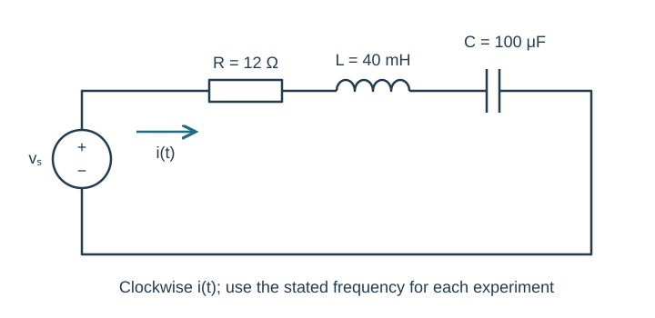
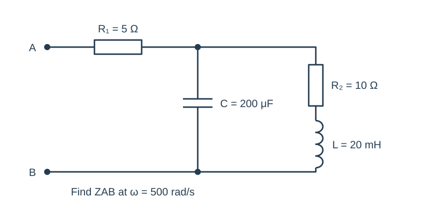
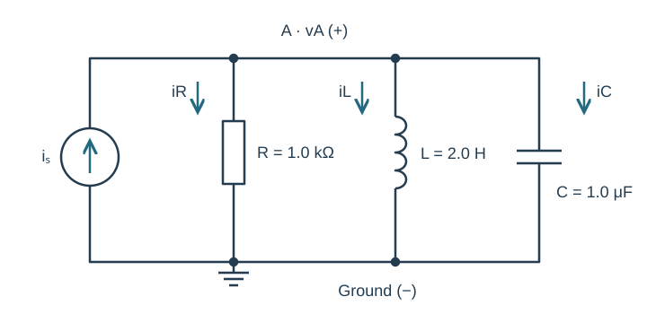
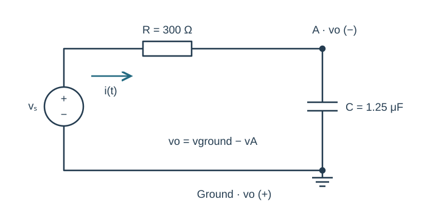
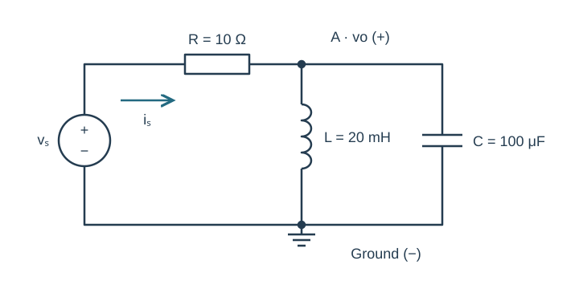

Course practice / Batch 05 / 2026-10-11 PDT
ENGR 202
正弦、相量与阻抗
Sinusoids, phasors & impedance · 第 5 组：HW 1 风格 5 题 + HW 2 风格 5 题
A time axis is labeled in milliseconds
A waveform is written as \(v(t_{ms})=9\cos(0.8t_{ms}-\pi/3)\;\mathrm V\), where \(t_{ms}\) is the numerical time in milliseconds and the phase is in radians.
- Rewrite v using t in seconds. State angular frequency in rad/s, frequency in Hz, and period in ms.
- Give the cosine-reference peak phasor and calculate v(0).
- Find the first positive maximum and first upward zero crossing at or after t = 0.
- Sketch one period with a time axis in ms. Explain the frequency error if someone treats 0.8 as rad/s while leaving the numerical phase expression unchanged.
中文提示（不含解答）
毫秒变量与秒变量相差 1000 倍；角频率必须配合横轴单位。
Which expressions are the same waveform?
At \(\omega=700\;\mathrm{rad/s}\), consider these three expressions, each in volts: \(x_1(t)=8\cos(700t+5\pi/2)\), \(x_2(t)=-8\sin(700t)\), and \(x_3(t)=8\sin(700t)\).
- Write each as a positive-amplitude cosine with principal phase in (−180°, 180°]. Identify all equivalent pairs.
- Let T be the period and define y(t) = x1(t − T/2). Find Y and state which of x1, x2, x3 equals y for every t.
- Check the three original expressions at t = 0 and t = π/1400 s. Explain why checking only t = 0 would not establish equivalence.
- Draw the three phasors with labels on equal-scale axes.
中文提示（不含解答）
相位可以加减整圈；相差半圈的波形在某些取样点也可能都为零。
Add opposing phasors without losing direction
Let \(A=6\angle140^\circ\;\mathrm V\) and \(B=10\angle(-40^\circ)\;\mathrm V\). Both describe 500 rad/s cosine-reference signals.
- Give A and B in rectangular form and show their angular separation.
- Find S = A + B and D = A − B in rectangular and polar form, keeping positive magnitudes.
- Write the time-domain waveforms represented by S and D.
- Draw both operations tip-to-tail with a common voltage scale. Explain why reporting S as a negative magnitude at 140° is not the requested canonical form.
中文提示（不含解答）
两个相量方向相反；做差时还需要把被减向量翻转。
Multiply, divide, and normalize the phase
Evaluate \(z=\dfrac{(-3+3j)(-2+2j)}{1-j\sqrt3}\).
- Compute the numerator and denominator in rectangular and polar form.
- Obtain z by rectangular arithmetic and independently by magnitude/phase arithmetic.
- Give z in rectangular and principal polar form, then find its conjugate and magnitude squared.
- Verify z(1 − j√3) reproduces the numerator. Show explicitly where phase wrapping is needed when multiplying the numerator phasors.
中文提示（不含解答）
先保留乘积的完整实部与虚部；乘除相位可以超出主值范围，最后再化回。
Choose an amplitude to cancel the quadrature part
Two currents are \(i_1(t)=a\cos(600t+\pi/3)\;\mathrm A\) and \(i_2(t)=6\cos(600t-\pi/6)\;\mathrm A\), where a is a positive real amplitude to be chosen. The desired total current must have phase 0° and a positive cosine amplitude.
- Express the total phasor as a real part plus j times an imaginary part in terms of a.
- Determine a and the resulting total peak amplitude. Check that the real part is positive.
- Write the total time-domain current and verify the sum at t = 0 and t = π/1200 s.
- Draw the two components and resultant on equal-scale current axes. Explain why cancelling the imaginary part alone would not guarantee a 0° phase if the real part were negative.
中文提示（不含解答）
同相于正余弦要求虚部为零且实部为正；先用前一条件求未知幅值。
The same components at two source frequencies
The series circuit has R = 12 Ω, L = 40 mH, and C = 100 μF. In two separate experiments the source is \(v_s(t)=12\cos(\omega t+\pi/9)\;\mathrm V\): experiment A uses ω = 500 rad/s, and experiment B uses ω = 1000 rad/s. Current is clockwise from the positive source terminal. Treat each experiment independently.
- Draw and label the impedance circuit for each experiment.
- For each, find total impedance, current phasor, and steady-state i(t).
- Find the resistor, inductor, and capacitor voltage phasors for each, and verify KVL separately.
- Compare the current amplitudes and source-relative phases. Explain why the current phasors from the two experiments cannot simply be added as if they shared one angular frequency.

中文提示（不含解答）
频率改变时电感和电容阻抗都必须重算；每次试验内部才使用同一个 ω。
Parallel capacitor and a series RL branch
At ω = 500 rad/s, R₁ = 5 Ω is in series with two parallel branches between the next node and B. Branch 1 is C = 200 μF. Branch 2 is R₂ = 10 Ω in series with L = 20 mH. Input terminal A is before R₁. Find ZAB.
- Calculate ZC and the complete series-RL branch impedance.
- Reduce the parallel pair, then include R₁. Give the input impedance in rectangular and polar form.
- Check the parallel result by summing branch admittances.
- Identify the input network’s net reactance sign. Explain why having an inductor in one branch does not by itself determine that sign.

中文提示（不含解答）
R₂ 与 L 串联，整个支路再与 C 并联；不要将 R₁ 加进支路导纳。
A current source with three parallel branches
The source \(i_s(t)=0.005\cos(500t-\pi/6)\;\mathrm A\) injects current upward into node A. R = 1.0 kΩ, L = 2.0 H, and C = 1.0 μF each connect directly from A to ground. Define vA positive at A and all three branch currents downward.
- Draw the phasor circuit and calculate total admittance.
- Find VA in rectangular and polar form and write vA(t).
- Compute IR, IL, and IC and verify IR + IL + IC = Is.
- Compare the inductor and capacitor current phases and amplitudes. Explain why their individual current magnitudes should not be added as ordinary positive numbers when checking KCL.

中文提示（不含解答）
并联支路电压相同；电感导纳与电容导纳的虚部符号相反。
A deliberately reversed output reference
The source \(v_s(t)=20\cos(2000t+\pi/12)\;\mathrm V\) drives R = 300 Ω in series with C = 1.25 μF. Node A is the capacitor’s upper plate; its lower plate is grounded. Define the requested output as vo = vground − vA, so the positive output reference is at ground and the negative reference is at A. Current is clockwise.
- Find total impedance and current phasor.
- First find VA relative to ground, then find the requested Vo. Give both in rectangular and polar form.
- Write vo(t), and check it at t = 0 against −vA(0).
- Find the resistor voltage with the passive reference and verify VR + VA = Vs. Explain why substituting Vo for VA in that KVL sum would use the wrong sign.

中文提示（不含解答）
输出箭头或正负号决定所求电压；先计算常规节点电压，再按定义转换。
A parallel LC load at a specified frequency
The source \(v_s(t)=10\cos(1000t-\pi/6)\;\mathrm V\) drives a series R = 10 Ω, followed by node A. From A to ground, L = 20 mH and C = 100 μF are in parallel. Define vo from A to ground and source current through R toward A. Use only the stated frequency.
- Compute the parallel-load admittance and impedance, then the total input impedance.
- Find the source-current and output-voltage phasors in rectangular and polar form, and write vo(t).
- Find the inductor and capacitor currents. Verify their phasor sum equals the source current, even if an individual branch-current amplitude exceeds the source-current amplitude.
- Check KVL using the resistor voltage and Vo. Predict vo at t = 0 and t = π/2000 s.
- For optional LTspice verification, state the source frequency in Hz and the equivalent sine-source phase. Compare the two predicted phases in a late cycle after transients settle, using explicitly matching current directions.

中文提示（不含解答）
先加并联导纳再求倒数；本题给定频率下导纳不为零。